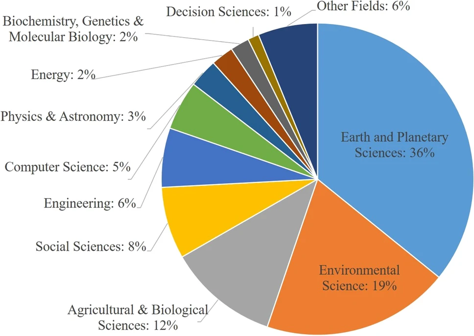

5 Google Earth Engine (GEE)
5.1 Introduction to GEE
This week we were introduced to Google Earth Engine (GEE), the one-hour lecture was heavy, full of new terminologies and concept. The session covered: code syntax, objects, and functions; the differences between client-side and server-side processes; and key technical ideas like scaling, projections, and reductions. We also explored common analytical techniques, including zonal statistics, regression, and principal component analysis.
Here, the focus will be on two key components that i think are essential building blocks for anyone beginning to work with Google Earth Engine (GEE): scaling and reduction
In GEE, the concept of scale refers to the resolution of the data—how large or small each pixel is, such as 10 meters, 30 meters, or 500 meters. Unlike traditional GIS tools, where the resolution is determined by the input data, GEE takes a distinctive approach by tying scale to the output. This process occurs seamlessly on the server side, enabling users to handle datasets with varying native resolutions without manual resizing, reprojection, or alignment. If the scale isn’t explicitly set, GEE assigns one based on the context—typically the native resolution of the input data or the zoom level of the map in view. This flexibility stands out as one of GEE’s greatest strengths, removing the time-consuming preprocessing steps common in traditional workflows. Yet, this convenience brings a layer of responsibility: users must thoughtfully choose a scale that fits their analysis needs. A scale too coarse risks hiding critical patterns or details, while one too fine can make the analysis overly complex or computationally intensive.
Reduction is another fundamental concept that plays a crucial role in analyzing and summarizing geospatial data. It refers to aggregating pixel values into concise statistics, such as means, sums, or extremes, enabling analysis across spatial or temporal dimensions. For example, reducing a time series of satellite images to a single composite can reveal trends in vegetation health (e.g., NDVI) or land surface temperature over time (Zhang et al., 2003). Reduction techniques in GEE can be broadly categorized into:
Temporal Reduction (imageCollection.reduce()): Aggregating data over time, such as calculating seasonal or annual averages. This is particularly useful for monitoring long-term environmental changes .
Spatial Reduction:
• reduceRegion(), reduceRegions() - (Figure 1): Summarizing data over a geographic area to compute statistics for polygons or points.
• reduceNeighborhood() - (Figure 2): Aggregating data within a kernel or moving window, which is useful for smoothing data or detecting spatial patterns (e.g., edge detection or texture analysis).
Spectral Reduction (image.reduce()): Combining or summarizing data across multiple bands, such as computing vegetation indices or band-specific statistics.

Figure 1 - Illustration of a Reducer applied to an ImageCollection.
Source

Figure 2 - Illustration of reduceNeighborhood(), where the reducer is applied in a kernel
Source
Scale and reduction are foundational to geospatial analysis in GEE: scale defines the resolution, shaping the framework for analysis, while reduction extracts meaningful insights from data. Mastering these concepts goes beyond technical skill—it’s about balancing detail and simplicity to address real-world questions effectively. I came across a very interesting metaphor in a post (unfortunately, I’ve lost the link, but it’s too good to skip): it’s almost like cooking— scale preps the ingredients, chopping them just right, and reduction simmers them into a perfect sauce. Get one wrong, and the whole dish is off. In GEE, this balance feels like an art form, one that takes practice to master but opens up a world of possibilities once you do. So it’s not just about the tools; it’s about understanding the process, experimenting, and refining your approach.
5.2 Applications
GEE has emerged as a critical tool for accessing and analyzing geospatial data across various disciplines. Pham-Duc et al. (2023) reviewed trends in GEE usage by analyzing peer-reviewed articles up to 2023, revealing that nearly 50% of applications are concentrated in the fields of Earth and planetary sciences and environmental science (Figure 3). This dominance aligns with these fields’ reliance on processes that are inherently spatial, temporal, and data-intensive. GEE, with its extensive satellite imagery archive, cloud-based processing power, and real-time capabilities, is ideally suited for studying phenomena such as deforestation, climate change, and ecosystem dynamics.

Figure 3 - Disciplines where GEE has been applied
Global Forest Cover Change by Hansen et al. (2013) stands out as one of the pioneering applications in quantifying global forest extent and change in a high-resolution (30-meter) thematic map. This work has become a cornerstone for researchers studying deforestation and forest dynamics at a global scale (Heino et al., 2015; Tyukavina et al., 2017). In addition, GEE has played a critical role in real-time disaster monitoring, such as during the recent California wildfires, where it enabled rapid mapping of fire perimeters, burn severity, and smoke dispersion using satellite data (Anderson, 2025)
GEE’s potential extends beyond environmental and disaster applications. By providing access to high-performance computing and vast datasets, it empowers researchers and policymakers to address global challenges with remarkable precision and the ability to scale up solutions.
5.3 Reflections
This week, one main thought that continually came to my mind while learning more about GEE is why it hasn’t been more widely adopted by governments and large companies, especially given its real-time capabilities and open-access model. While GEE is still popular among researchers and environmental scientists for its ability to process vast amounts of satellite data quickly, its reliance on coding (JavaScript or Python) can be a significant barrier for non-technical users. In contrast, Esri’s ArcGIS dominates in global policy and spatially based applications, offering a comprehensive, enterprise-grade GIS suite with user-friendly interfaces like ArcGIS Pro and ArcGIS Online. These features make Esri more accessible for policymakers and organizations that may lack technical expertise but require robust tools for decision-making. However, Esri’s dominance raises concerns about accessibility for underfunded regions and institutions that cannot afford proprietary software licenses. GEE’s open-access model has the potential to democratize geospatial analysis, particularly in developing countries or smaller organizations, but its steep learning curve and lack of intuitive graphical interfaces limit its broader adoption. Additionally, GEE’s cloud-based nature, while powerful, can be a limitation for users handling sensitive data that requires offline processing. That said, despite GEE’s established collaborations with the United Nations and NGOs—such as UNEP and FAO for environmental monitoring and disaster response—I think its niche as a coding-heavy, research-focused tool limits its appeal for widespread governmental and corporate use compared to Esri’s enterprise-ready solutions. GEE could expand its influence by enhancing user-friendly interfaces, integrating AI automation, and forming deeper enterprise partnerships, potentially complementing Esri’s strengths to create a more inclusive geospatial ecosystem for global policy and decision-making.
5.4 References
Google Earth Engine Team. (n.d.). Introduction to reducers. Google Developers. https://developers.google.com/earth-engine/guides/reducers_intro
Hansen, M., Potapov, P., Moore, R., Hancher, M. (2013). The first detailed maps of global forest change. Google Research Blog. Retrieved from https://research.google/blog/the-first-detailed-maps-of-global-forest-change/
Heino, M., Kummu, M., Makkonen, M., Mulligan, M., Verburg, P. H., Jalava, M., & Räsänen, T. A. (2015). Forest loss in protected areas and intact forest landscapes: A global analysis. PLOS ONE, 10(10), e0138918. https://doi.org/10.1371/journal.pone.0138918
John Anderson (2025). Supporting the Los Angeles Community During the Wildfires. Google Earth. Retrieved from https://medium.com/google-earth/supporting-the-los-angeles-community-during-the-wildfires-f67614046794
Pham-Duc, B., Nguyen, H., Phan, H., & Tran-Anh, Q. (2023). Trends and applications of Google Earth Engine in remote sensing and earth science research; a bibliometric analysis using SCOPUS database. Earth Science Informatics, 16(3), 2355–2371. https://doi.org/10.1007/s12145-023-01035-2
Tyukavina, A., Hansen, M. C., Potapov, P. V., Stehman, S. V., Smith-Rodriguez, K., Okpa, C., & Aguilar, R. (2017). Types and rates of forest disturbance in Brazilian Legal Amazon, 2000–2013. Science Advances, 3(4), e1601047–e1601047. https://doi.org/10.1126/sciadv.1601047
Zhang, X., Friedl, M. A., Schaaf, C. B., Strahler, A. H., Hodges, J. C. F., Gao, F., Reed, B. C., & Huete, A. (2003). Monitoring vegetation phenology using MODIS. Remote Sensing of Environment, 84(3), 471–475. https://doi.org/10.1016/S0034-4257(02)00135-9